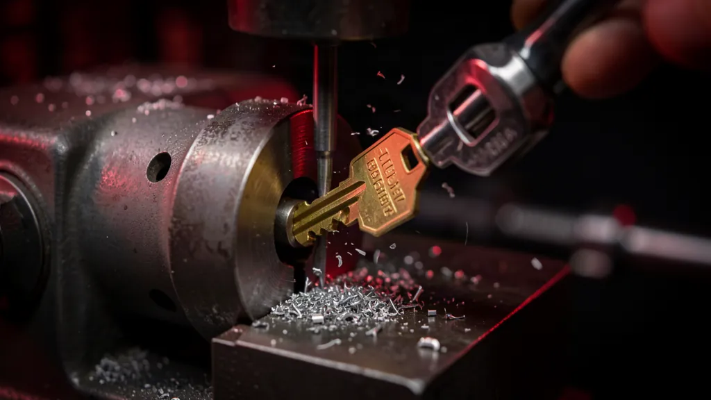

Mobile Key Cutting
Keys cut where you are, not at a mall counter. Call 079 106 5911 or WhatsApp us.
Most key cutting in Boksburg happens at a counter inside a shopping centre. You drive there, you queue, and if the key is anything other than a plain house key you are often told to try somewhere else.

We work the other way round. The equipment comes to your house, your gate or your business, keys get cut and tested on the spot, and if one does not turn properly it gets corrected there and then rather than on a second trip.
That matters most for the keys a counter cannot help with: keys cut from the lock when every original is gone, security gate and padlock profiles, and car keys that need coding to the vehicle as well as cutting.
Front door cylinders, mortice keys, security gate and trellis profiles, burglar bar locks, padlocks. Duplicates for the household so one key is not travelling to work every morning.
No original key at all. The lock is read and a working key is cut to it. It is slower and dearer than a copy, but far cheaper than replacing hardware that is otherwise fine.
Staff sets, storeroom and gate keys, and keyed-alike arrangements so one key runs several doors. Commercial locksmith →
Cut and electronically programmed to the vehicle, including remotes and transponders. Make, model and year set the price. Auto locksmith →
Blade snapped off in the lock or the ignition. Usually removed without replacing the barrel, if nobody has already worked at it with pliers.
Some keys are legally restricted and can only be duplicated with the owner's authorisation. We will tell you if yours is one, rather than quietly refusing.
A straight duplicate of an ordinary house or gate key is the cheapest thing we do, and it is worth doing before you need it. The published market ranges that matter here:
Note the first line. If your problem is that you no longer know who holds a key, cutting more keys is the wrong answer. Rekeying resets the existing lock to a new key and makes every old one useless, usually for less than replacing the hardware.
The midnight lockout, the after-hours tariff, the replacement car key: almost every expensive call we take would have been a cheap daytime job if one spare key existed somewhere sensible.
Somewhere sensible means not in the handbag that gets locked in the car with everything else, and not under the mat by the door. A trusted neighbour, a parent's house, or a locked drawer at work all work.
If you are booking us for something else anyway, get the spares cut in the same visit. You pay one call-out instead of two.
People searching key cutting near me, key shop near me or where to cut keys near me in Boksburg are usually weighing a trip against a call-out. It is worth being straight about which one you actually need, because it is not always us.
When a kiosk is the better answer. A plain house or padlock key, copied from a working original, during shopping hours, is quick and cheap at a hardware counter. If that describes your job and you are passing a centre anyway, do that. We would rather tell you than have you pay a call-out for it.
When the counter cannot help. The van becomes the sensible option when the shops are shut, when there is no original to copy, when the key is a car key needing transponder or remote programming, or when the key belongs to a security or restricted profile that a kiosk does not stock blanks for. Keys can also be cut to the lock itself — that is, decoded from the cylinder when every copy has been lost.
The cutting machine, the blanks and the programming equipment are in the van, so the cutting happens at your gate rather than at a counter.
Every key is tried in the actual lock before we leave. A key that turns on the bench but sticks in the door is not finished.
Sunday evening is the same as Tuesday morning. Call 079 106 5911 whenever it suits.
If you are having keys cut because there is only one left in circulation, cut two while we are there. It is the cheapest lockout insurance available, and considerably cheaper than the emergency call-out it prevents.
Mobile key cutting across Boksburg. House, gate, padlock, office and car keys, cut and tested where you are.